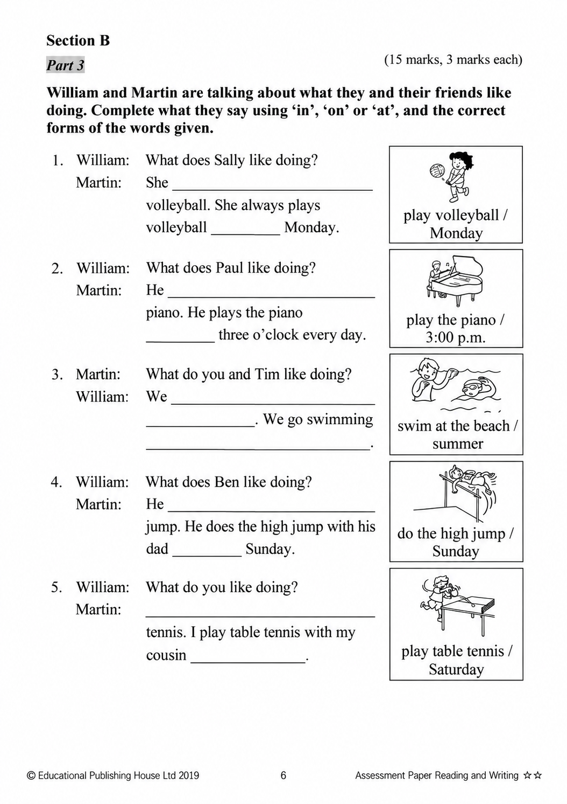
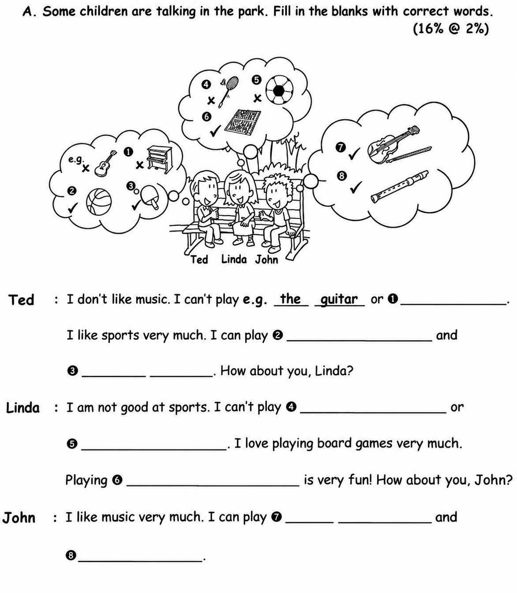

已掌握
| # | 中文意思 | 例句/提示 | 英文默写 | 已掌握 |
|---|---|---|---|---|
| noun 名词 | ||||
| 1 | 图书馆 | I read books in the . | ||
| 2 | 游戏房 | The children are in the . | ||
| 3 | 奶油 | I like on my cake. | ||
| 4 | 大厅 | We meet in the school . | ||
| 5 | 电影院 | We watch films at the . | ||
| 6 | 周日 | We visit Grandma on . | ||
| 7 | 厨师 | The cooks dinner. | ||
| 8 | 晚饭 | We eat at home. | ||
| 9 | 眼镜 | He wears . | ||
| verb 动词 | ||||
| 10 | 感觉 | I happy today. | ||
| 11 | 带有/搬运 | I my bag. | ||
| phrase 短语 | ||||
| 12 | 留在家里 | We on rainy days. | ||
| 13 | 照顾 | I my little sister. | ||
| 14 | 平安夜 | We decorate the tree on . | ||
| adjective 形容词 | ||||
| 15 | 口渴的 | I am after running. | ||
| 16 | 聪明的 | She is and kind. | ||
| 17 | 勤劳的，勤奋的 | She is a student. | ||
| 18 | 漂亮的 | The flower is . | ||
| adverb 副词 | ||||
| 19 | 很少 | I eat sweets. | ||
| uncategorized 未分类 | ||||
| 20 | 见面 | Let's at the school gate. | ||
| # | 单词/词组 | 中文意思 | 例句/说明 | 已掌握 |
|---|---|---|---|---|
| adjective 形容词 | ||||
| 1 | correct | This answer is correct. | ||
| 2 | wise | The wise man gave good advice. | ||
| 3 | polite | It is polite to say "thank you". | ||
| 4 | extra | We need an extra chair for our guest. | ||
| noun 名词 | ||||
| 5 | home | We stayed at home in the afternoon. | ||
| 6 | shell | The shell is hard. | ||
| 7 | reindeer | The reindeer is walking in the snow. | ||
| 8 | flat | We live in a flat. | ||
| 9 | badminton | I play badminton with my friend. | ||
| 10 | event | This event is fun. | ||
| 11 | roundabout | The roundabout is in the playground. | ||
| 12 | ice-skating | She likes ice-skating in winter. | ||
| 13 | garlic | I like vegetables with garlic. | ||
| 14 | teatime | Look at the menu. It is teatime. | ||
| 15 | chemical | The science teacher keeps the chemicals in a locked cupboard. | ||
| 16 | pudding | We ate Christmas pudding after dinner. | ||
| 17 | stocking | We also like to hang up Christmas stockings on our bedroom doors. | ||
| noun phrase 名词短语 | ||||
| 18 | a box of chicken wings | May I have a box of chicken wings, please? | ||
| 19 | special set | The special set includes a sandwich and a drink. | ||
| verb 动词 | ||||
| 20 | arrive | I arrive at school on time. | ||
| 21 | leave | We always turn off the lights when we leave a room. | ||
| phrase 短语 | ||||
| 22 | rhyming words | "Cat" and "hat" are rhyming words. | ||
| 23 | take care | Take care! | ||
| verb phrase 动词短语 | ||||
| 24 | play the piano | I want to play the piano every day. | ||
| 25 | playing card games | She likes playing card games. | ||
| 26 | eat moon cakes | We eat moon cakes at the Mid-Autumn Festival. | ||
| 27 | sing 'Happy Birthday' | We sing 'Happy Birthday' to her. | ||
| 28 | get a pet | Think carefully before you get a pet. | ||
| uncategorized 未分类 | ||||
| 29 | problem | Can you help me with this maths problem? | ||
| interrogative pronoun 疑问代词 | ||||
| 30 | what | What do you do on your birthday? | ||
| # | 中文意思 | 例句/提示 | 英文默写 | 已掌握 |
|---|---|---|---|---|
| time/date 时间日期 | ||||
| 1 | 星期一 | is a weekday. | ||
| 2 | 星期五 | is a weekday. | ||
| 3 | 星期日 | is a weekend day. | ||
| time unit 时间单位 | ||||
| 4 | 年 | A has 12 months. | ||
| directions 方向 | ||||
| 5 | 南 | is a direction. | ||
| numbers 数字 | ||||
| 6 | 8 | is 8. | ||
| 7 | 13 | is 13. | ||
| 8 | 19 | is 19. | ||
| solid shape 立体图形 | ||||
| 9 | 五棱锥 | A has one pentagonal base and five triangular side faces. | ||
| 10 | 球 | A is round. | ||
| 11 | 侧面 | A is on the side. | ||
| 12 | 曲面 | A cylinder has a . | ||
| plane shape 平面图形 | ||||
| 13 | 三角形 | A has three sides. | ||
| 14 | 梯形 | A has exactly one pair of parallel sides. | ||
| geometry 几何 | ||||
| 15 | 邻边 | These are . | ||
| # | 单词/词组 | 中文意思 | 例句/说明 | 已掌握 |
|---|---|---|---|---|
| operations 运算 | ||||
| 1 | borrowing | Borrowing helps when we subtract. | ||
| question word 题目词 | ||||
| 2 | compare | We compare two numbers. | ||
| 3 | match | Match the number to the word. | ||
| answer 答案 | ||||
| 4 | correct | Choose the correct answer. | ||
| place value 位值 | ||||
| 5 | units | The digit is in the units place. | ||
| comparison 比较 | ||||
| 6 | less | 8 is less than 10. | ||
| 7 | most | Which group has the most? | ||
| time/date 时间日期 | ||||
| 8 | hour hand | At three o'clock, the hour hand points to 3. | ||
| 9 | common year | A common year has 365 days. | ||
| 10 | large division | The hour hand moves one large division in one hour. | ||
| position 位置 | ||||
| 11 | behind | The bag is behind the chair. | ||
| 12 | below | The box is below the table. | ||
| 13 | back | The desk is at the back of the room. | ||
| operations calculation 运算 | ||||
| 14 | dividend | The dividend is divided by the divisor. | ||
| 15 | divisor | The divisor divides the dividend. | ||
| 16 | quotient | The quotient is the answer in division. | ||
| 17 | checking | Checking by addition shows that 9 - 4 = 5 is correct: 5 + 4 = 9. | ||
| teacher math vocabulary 老师数学词汇 | ||||
| 18 | each | Each child has three pencils. | ||
| 19 | start | Start counting from ten. | ||
| currency money 货币 | ||||
| 20 | cent | One cent is a small amount of money. | ||
| 21 | pay for | I pay for the book. | ||
| measurement 测量 | ||||
| 22 | ruler | Use a ruler to measure the length of the line segment. | ||
| 23 | height | Measure the height of the box. | ||
| 24 | millimeter | One millimeter is one tenth of a centimeter. | ||
| 25 | kilogram | One kilogram is 1,000 grams. | ||
| 26 | pointer | The pointer on the scale shows 2 kg. | ||
| data charts 统计图 | ||||
| 27 | pictogram | Read the pictogram. | ||
| directions tool 方向工具 | ||||
| 28 | compass | A compass shows directions. | ||
| 句型结构 | ||||
| 29 | Angle ... is the smallest. | Angle B is the smallest. | ||
| 30 | ... is to the east of ... | The school is to the east of the park. | ||

